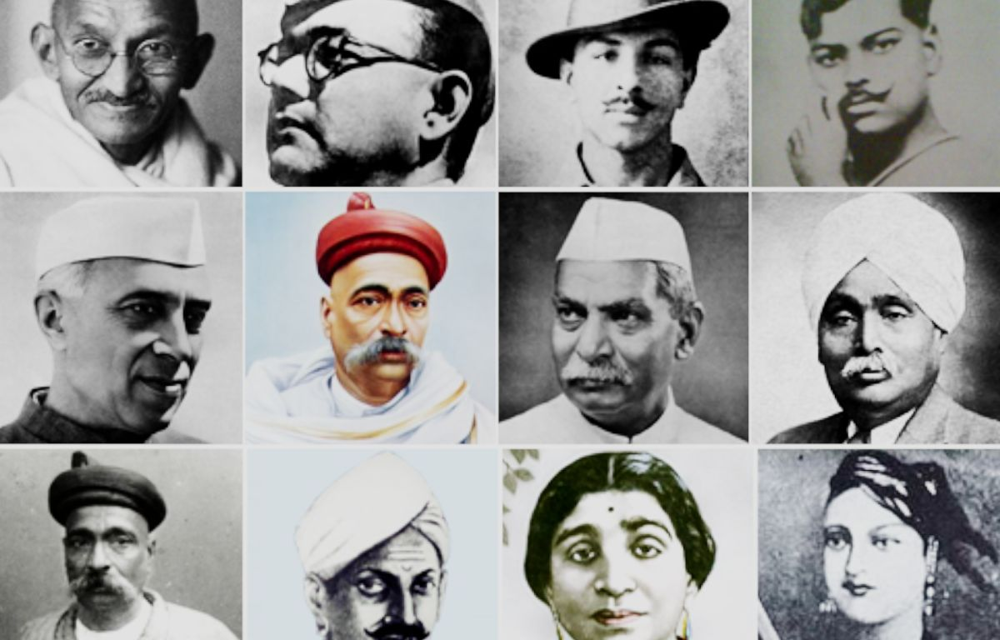

Indian freedom fighters bravely fought against British rule to win India's independence. They faced hardships, sacrificed their lives, and inspired the nation. Their courage and determination helped India become a free country in 1947. Check the top 10 freedom fighters of India with their Pictures. A freedom fighter is someone who worked hard to help India become free from British rule. These brave people, like Mahatma Gandhi and Bhagat Singh, fought for the country’s independence through protests, non-violent marches, and other actions. Mahatma Gandhi led peaceful movements like the Salt March to show that India wanted freedom without using violence. Bhagat Singh used his courage to fight against unfair laws and was known for his bravery. Their efforts and sacrifices inspired many people and played a big role in making India an independent nation. They showed great courage and love for their country, and their actions helped to end British rule in India.
List of freedom Fighter Of India
- Mahatma Gandhi Click On the Checkbox to Read About Mahatma Gandhi
- Mangal Pandey Click On the Checkbox to Read About Mangal Panday
- Sardar Vallabh Bhai Patel Click On the Checkbox to Read About Sardarn Vallabh Bhai Patel
- Lal Bahadur Shastri Click On the Checkbox to Read About Lal Bahadur Shashtri
- Ram Prasad Bismil Click On the Checkbox to Read About Ram Prasad Bidmil
- Subhash Chandra Bose Click On the Checkbox to Read About Subhash Chandra Bose
- Bhagat Singh Click On the Checkbox to Read About Bhagat Singh
- Chandrashekhar Azad Click On the Checkbox to Read About Chandrashekhar Azad
- Shivaram Hari Rajguru Click On the Checkbox to Read About Shivaram Hari Rajguru
- Rani Laxmi Bai Click On the Checkbox to Read About Rani Laxi Bai
Mohandas Karamchand Gandhi, popularly known as the Mahatma Gandhi and the Father of Nation was among the top freedom fighters to boosted the movement of freedom. He was born on October 02, 1869, in a Hindu family in coastal Gujarat. He was a lawyer by profession and represented an Indian Merchant in a lawsuit in South Africa in 1893. He then went on to live there for another 21 years.
In the year 1915 when he returned to India, he started to strengthen the spirits of nationality and freedom in the hearts of local citizens who were getting bashed and scolded by the British officers and rulers. He started multiple movements like the Champaran Movement in 1917, the Kheda Movement in 1918, the Khilafat Movement in 1919, the Non-Cooperation Movement in 1920, the Quit India Movement in 1942, and the Civil Disobedience Movement which continued till the day of Independence.

Mangal Panday also referred to as India’s First Freedom Fighter played a very crucial role in embarking the spark for the need for Independence in many hearts. He was a sepoy (infantryman) in the 34th Bengal Native Infantry (BNI) regiment of the British East India Company but he revolted against it and became one of the key figures in India’s first battle for freedom against the Britishers in the 1857 war.

Sardar Vallabh Bhai Patel also known as the Iron Man of India was born on October 31, 1875, in Nadiad, Kheda in Gujarat. He played a very crucial role in the Independence and the post-independence activities in India. He was among the famous personalities who led the Salt Satyagraha movement initiated by Mahatma Gandhi. The speech given by Sardar Patel during the movement changed the perspective of multiple people strengthened the unity and increased the power of the movement. After the Independence, Sardar became the 1st Deputy Prime Minister and Home Minister of India and played a very crucial role in the merger of multiple states in India.

Lal Bahadur Shashtri, 2nd Prime Minister of Independent India was born on October 02, 1904, in Mughalsarai. He belonged to a very humble family and led a very simple lifestyle in his early childhood but as he grew up he became more interested in joining the country’s struggle against foreign slavery. He was among those visionary leaders who opposed the India Kings who supported the British government in ruling the country.
At the early age of 16 years, he joined the non-cooperation movement called by Gandhiji to bring together the countrymen against British rule. There were many incidents when he was taken into custody by the British police but he stood still and played a crucial role in the battle of freedom and later became the 2nd Prime Minister of Independent India.

Ram Prasad Bismil a revolutionary poet, and writer was born in the Shahjahanpur district, of Bihar on June 11, 1897. Along with writing revolutionary articles and poems, he joined and led various movements like the Mainpuri conspiracy and the Kakori Train Action. He wrote poems that inspired people to join and give their part in the struggle for freedom. Due to his regular actions against the British Rules he was hanged till death in Gorakhpur Jail on December 19, 1927.

Subhash Chandra Bose honorably known as “Netaji” was born on January 23, 1897. He was among those leaders who with his tactics and planning got the British army and rulers on the back foot. In 1921, after the Jallianwala Bagh massacre, he returned to India and joined the Indian National Congress and was less keen on constitutional reform and more open to socialism.
On October 21, 1943, he founded the Azad Hind Fauj in collaboration with the Japanese forces to fight against British rule. He gave the slogan “tum mujhe khoon do main tumhe azadi dunga“.

Bhagat Singh was one of the most respected and revolutionary freedom fighters who with his sacrifice enlightened the fire in the hearts of every individual for freedom. He was born on September 27, 1907, and was very much interested and focused on his demand for freedom. In December 1928, at the early age of 21 years, he killed John Saunders and Channan Singh as a retaliation against the death of an Indian nationalist and was the mastermind in the Central Assembly Bombing Case in which he and Batukeshwar Dutt threw a bomb in the Central Assembly at Delhi, from the Visitors’ Gallery. He was hanged till death by the Britishers in March 23, 1931 at the age of 23 years only.

Chandra Shekhar Sitaram Tiwari popularly known as the Chandrashekhar Azad was a young revolutionary freedom fighter. Chandra Shekhar Azad was born on July 23, 1906, in Bhabhra village of Alirajpur. When Mahatma Gandhi suspended the non-cooperation movement in 1922, Azad was disappointed and then he met with Ram Prasad Bismil who founded the Hindustan Republican Association (HRA). He participated in multiple activities and incidents that can be counted as the baby steps towards the big battle. Leading to his revolutionary activities he was betrayed by the police and was shot in a battle at Allahabad’s Alfred Park (now Azad Park) where he was shot after he wounded two officers with his bullets.

Shivaram Hari Rajguru an independent activist from Maharashtra is popularly known for his involvement in the assassination of the British police officer named John Saunders. He was born on August 24, 1908, at Khed located at the bank of river Bheema near Pune. He was an active member of the Hindustan Socialist Republican Association which only had one aim of getting freedom and that too at any cost. He along with Bhagat Singh & Sukhdev Thapar took part in the assassination of the British police officer named John Saunders and was later hanged till death on March 23, 1931, in the crime of the assassination.

Rani Laxmi Bai or the Jhansi ki Rani was among the top female leaders to have participated and had a huge impact on the freedom movement. She was born on November 19, 1828, in Maharani consort of Jhansi. She was among the leaders of the famous Indian Rebellion Movement in 1857 after which she became the national hero and a symbol of resistance and power. She died while fighting a battle against the Britishers on June 18, 1858, at Gwalior in which more than 5,000 Indian Soldiers sacrificed their lives for the struggle. She will be remembered as one of the top Women Freedom fighters in India.
15 Women Freedom Fighter of India and their Role in Independence